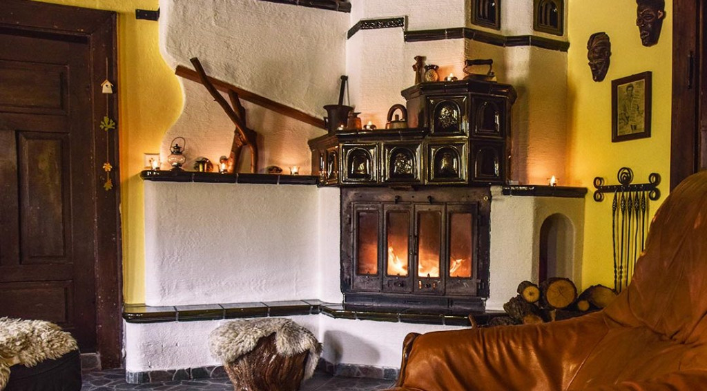

Na této stránce naleznete odpovědi na nejčastější dotazy našich hostů. Pomohou vám s rychlou orientací ohledně pobytu a služeb na naší chatě.
Chata je plně vybavená včetně kuchyňky, sociálního zařízení, Wi-Fi připojení a venkovního posezení s grilem.
Ano, pobyt s domácími mazlíčky je možný po předchozí domluvě a za malý poplatek. Váš čtyřnohý přítel je u nás vítán.
Parkování je možné přímo u chaty zdarma na vlastním vyhrazeném pozemku až pro tři vozidla.
| Služba | Cena (1 noc) | Poznámka |
|---|---|---|
| Pronájem celé chaty | 2 500 Kč | Cena za objekt |
| Domácí mazlíček | 150 Kč | Jednorázově za pobyt |
| Dřevo do krbu | 100 Kč | Jedno bednění |
